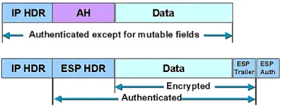
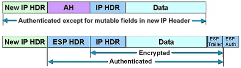

簡介
IPsec 是一組通訊協定，一起用於在 OSI 模型的第 3 層（網路層）裝置之間設定安全連線
通訊流程
Internet Protocol Security (IPsec) 的通訊流程主要分為兩個階段：IKE（Internet Key Exchange）階段和數據傳輸階段
IKE 階段
Internet Key Exchange Protocol (IKE) 階段分為兩個子階段：IKE Phase 1 和 IKE Phase 2
IKE Phase 1
- 目標：建立雙方之間安全的通道並驗證彼此的身份，通常稱為 IKE SA（Security Association），用來保護後續的密鑰交換。這個階段有兩種模式：主模式（Main Mode）和快速模式（Aggressive Mode）
- 流程
- 協商加密和驗證參數 (IKE)：雙方協商使用的加密（如 AES、3DES）、Hash（如 SHA-256）、DH（Diffie-Hellman）組、身份驗證方法（如 PSK、證書）
- DH 密鑰交換：通過 DH 算法交換密鑰材料，生成共享秘密
- 身份驗證：雙方根據約定的方法進行身份驗證
- 主要參數
- 加密演算法（Encryption Algorithm）： 用於加密 IKE 通訊的算法，例如 AES、3DES。
- 雜湊（Hash Algorithm）： 用於確保數據完整性的算法，例如 SHA-1、SHA-256
- DH 群組（Diffie-Hellman Group）： 用於密鑰交換的 DH 群組，例如 Group 2、Group 14
- 身份驗證方法（Authentication Method）： 用於驗證對方身份的方法，例如預共享密鑰（Pre-shared Key）、數位證書（Digital Certificates）
IKE Phase 2
- 目標：在 IKE Phase 1 建立的安全通道上協商用於保護實際數據流的參數，建立一個或多個 IPsec SA，這些 SA 將用於保護實際的數據傳輸。這個階段也稱為快速模式（Quick Mode）
- 流程
- 協商 IPsec SA（Security Association）：雙方協商用於保護數據流的加密和驗證參數
- 建立 IPsec SA：雙方確認協商的參數並建立 IPsec SA
- 主要參數
- 加密演算法（Encryption Algorithm）： 與 IKE Phase 1 相同
- 雜湊（Hash Algorithm）： 與 IKE Phase 1 相同
- PFS（Perfect Forward Secrecy）： 確保即使長期密鑰被破解，之前的通訊也不會被解密。PFS 需要再次執行 DH 密鑰交換
數據傳輸階段
在數據傳輸階段，IPsec 使用在 IKE Phase 2 中協商的 SA 來保護實際的數據傳輸。IPsec 有兩種工作模式：傳輸模式（Transport Mode）和隧道模式（Tunnel Mode）
傳輸模式（Transport Mode）
- 只對 IP 負載進行保護（即 IP 包的有效載荷）
- 原始 IP 頭部保持不變，只是加密了數據部分
- 主要用於主機間的通訊
- 實際案例
- 端點到端點的通訊
- 描述： 兩個終端設備（例如兩台伺服器或兩個工作站）之間直接進行加密通訊
- 應用情境： 企業內部的伺服器之間需要加密通訊，確保數據在傳輸過程中不被竄改或竊取。
- 遠端桌面連接
- 描述： 遠端桌面協定（RDP）使用 IPsec 傳輸模式來加密從用戶電腦到遠端伺服器的通訊。
- 應用情境： IT 管理員通過遠端桌面連接到企業內部的伺服器進行維護和管理，需要保護傳輸過程中的敏感數據。
- 端點到端點的通訊

隧道模式（Tunnel Mode）
- 對整個 IP 封包進行保護，將其作為新 IP 封包的負載
- 在原始 IP 封包外包裹一個新的 IP Header
- 主要用於網關之間的通訊
- 實際案例
- 站點到站點 VPN（Site-to-Site VPN）
- 描述： 兩個不同地理位置的網路（例如兩個分公司網路）之間通過 VPN 閘道器進行加密通訊
- 應用情境： 公司總部與遠端分公司之間需要建立安全的通訊通道，以保護內部資料傳輸和應用程序存取
- 遠端存取 VPN（Remote Access VPN）
- 描述： 遠端工作人員通過 VPN 客戶端連接到企業網路，VPN 客戶端和 VPN 伺服器之間的通訊進行加密
- 應用情境： 員工在外出差或在家工作時，需要安全地存取公司內部的應用和資料
- 雲服務和數據中心之間的通訊
- 描述： 企業內部數據中心和雲服務提供商之間使用 IPsec 隧道模式來保護數據傳輸
- 應用情境： 企業將部分應用程序遷移到雲端，需要確保本地數據中心和雲端之間的通訊安全
- 站點到站點 VPN（Site-to-Site VPN）

主要參數
- ESP（Encapsulating Security Payload）： 提供數據加密和驗證。ESP 提供數據加密、來源驗證和數據完整性檢查。ESP 通過在數據包內部添加一個 ESP 標頭和尾部來保護數據。
- AH（Authentication Header）： 提供數據的完整性和身份驗證，但不加密數據。AH 會在數據包 header 添加 AH，用於承載身份驗證數據
- SPI（Security Parameter Index）： 用於標識不同的 IPsec SA
- 密鑰材料（Keying Material）： 由 IKE 階段產生，用於加密和驗證數據
其他補充
- SA（Security Association）：IPsec 中定義的雙方之間的安全參數集合，包括 SPI（Security Parameter Index）、加密演算法、hash 等
- 隧道模式：指定 IPsec 工作於傳輸模式還是隧道模式
- 生存時間（Lifetime）：SA 的有效期，在到期後需要重新協商
Policy-based vs. Route-based
Policy-based IPsec
- 特點
- 配置方式： 基於安全策略（Security Policies）來決定哪些流量需要經過 IPSec 隧道
- 工作原理： 通過配置安全策略，定義特定的流量（例如，特定的源 IP、目的 IP、協定、端口等）需要被加密和保護。當匹配到這些策略的流量時，流量會被引導進入 IPSec 隧道
- 使用場景： 通常用於需要精細控制和高安全性的環境，例如企業內部的敏感數據傳輸
- 優點
- 精細控制：可以對特定流量進行精確控制和保護
- 安全性高：能夠為特定的應用和數據流量提供定制的安全策略
- 缺點
- 複雜性：配置和管理較為複雜，需要精細設置安全策略
- 擴展性：隨著網路規模的擴大，管理和維護策略的工作量也會增加
Route-based IPsec
- 特點
- 配置方式： 基於路由來決定哪些流量需要經過 IPsec 隧道。
- 工作原理： 配置虛擬的網路介面（通常稱為 VTI，Virtual Tunnel Interface），然後通過靜態路由或動態路由協議（例如 BGP、OSPF）將流量路由到這些介面。所有經過這些介面的流量都會自動被加密和保護
- 使用場景： 通常用於需要簡化配置和擴展性強的環境，例如大型企業的分支機構互聯
- 優點
- 簡化配置：通過路由表來控制流量，配置和管理相對簡單
- 擴展性好：適合於大型網路，隨著網路規模的擴大，配置和管理相對容易
- 缺點
- 控制精度較低：不能像 Policy-based IPsec 一樣對特定流量進行精細控制
- 路由依賴：需要依賴路由協議和路由表來控制流量
總結
- Policy-based IPsec： 使用安全策略來決定哪些流量需要經過 IPsec 隧道，適用於需要精細控制和高安全性的環境
- Route-based IPsec： 使用路由來決定哪些流量需要經過 IPsec 隧道，適用於需要簡化配置和高擴展性的環境
這兩種配置方法各有優缺點，具體選擇取決於網路的需求和規模。通常來說，Policy-based IPsec 提供更高的控制精度，而 Route-based IPsec 提供更好的擴展性和管理便利性。